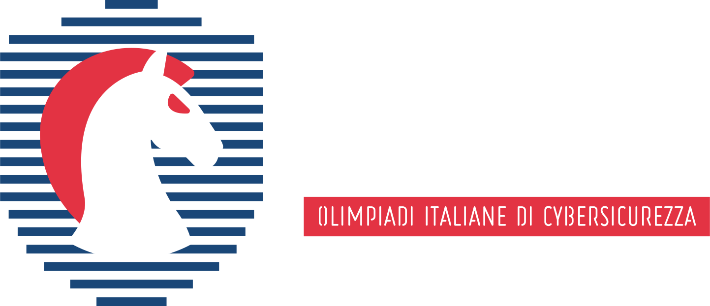

Cybersecurity
Mi alleno nel red teaming su Olicyber, affrontando sfide avanzate di attacco e difesa.
Palestra
Vado in palestra due volte a settimana, seguendo un programma e una dieta personalizzata.

Programmazione
Sviluppo progetti personali per migliorare le mie competenze e sperimentare nuove tecnologie.

Studio
Approfondisco le reti e la virtualizzazione usando Docker per imparare la gestione dei container.